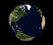
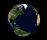
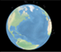
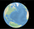

The satellites are displayed based on calculated position; you
can watch them move but it helps to zoom in a bit. You may have
to zoon out quite a bit to see satellites with very large
orbits. You can rotate the Earth and zoom in or out. If you've
allowed geolocation in your browser, a marker will show your
current position.
Hover over a satelite icon to show its name. Click it to bring
up pages/tabs that provide details
from Science.nasa.gov
and NSSDC. Select a
specific satellite from a group to highlight it and move the
camera to its position.


 

 
